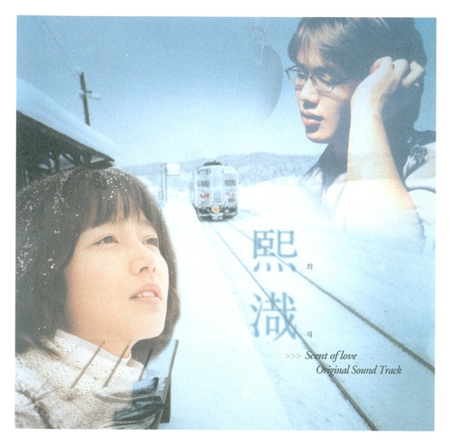

안녕하세요 라보엠입니다.
성시경의 대표곡 중 하나인 '희재'는 2003년 2월 12일에 발매된 영화 '국화꽃 향기'의 OST로, 20년이 지난 지금까지도 많은 사랑을 받고 있는 명곡입니다. 저는 군시절 영화의 원작 소설을 먼저 보고, 장진영을 너무나 좋아해서 영화도 너무 재밌게, 그리고 슬픈 마음으로 봤습니다. 이 영화를 찍고 얼마되지 않아 영화처럼 하늘로 떠난 배우 장진영을 저는 아직도 그리워하고 있습니다.

국화꽃 향기 OST 희재
곡 정보
제목: 희재
아티스트: 성시경
발매일: 2003년 2월 12일
작사: 양재선
작곡: MGR
편곡: 김영욱
수록 앨범: 국화꽃 향기 OST / Try To Remember
희재 노래 가사
햇살은 우릴 위해 내리고
바람도 서롤 감싸게 했죠
우리 웃음 속에 계절은 오고 또 갔죠
바람에 흔들리는 머릿결
내게 불어오는 그대 향기
예쁜 두 눈도 웃음소리도
모두 다 내 것이었죠
이런 사랑 이런 행복 쉽다 했었죠
이런 웃음 이런 축복 내게 쉽게 올리 없죠
눈물조차 울음조차 닦지 못한 나
정말로 울면 내가 그댈 보내준 것 같아서
그대 떠나가는 그 순간도
나를 걱정했었나요
무엇도 해줄 수 없는 내 맘 앞에서
그대 나를 떠나간다고 해도
난 그댈 보낸 적 없죠
여전히 그댄 나를 살게 하는 이율테니
이런 사랑 이런 행복 쉽다 했었죠
이런 웃음 이런 축복 내게 쉽게 올리 없죠
눈물조차 울음조차 닦지 못한 나
정말로 울면 내가 그댈 보내준 것 같아서
그대 떠나가는 그 순간도
나를 걱정했었나요
무엇도 해줄 수 없는 내 맘 앞에서
그대 나를 떠나간다고 해도
난 그댈 보낸 적 없죠
기다림으로 다시 시작일테니
얼마나 사랑했는지 얼마나 또 울었는지
그대여 한순간조차 잊지 말아요
거기 떠나간 그곳에서 늘
기억하며 기다려요
하루씩 그대에게 다가가는 나일테니
희재 노래 소개
'희재'라는 제목은 영화 '국화꽃 향기'의 여자 주인공 이름에서 따왔습니다. 영화에서 남자 주인공이 여자 주인공 '민희재'에게 고백하지만 이루어지지 못하고, 훗날 우연히 재회하게 됩니다. 그러나 희재가 불치병에 걸리면서 두 사람의 사랑은 희재가 세상을 떠나는 순간까지 이어집니다.
'희재'는 아름다운 선율과 감동적인 가사로 많은 이들의 마음을 울리는 곡입니다. 성시경의 부드럽고 감성적인 목소리가 노래의 분위기를 더욱 극대화시킵니다. 특히 이 곡은 진성과 가성을 오가는 고난도의 테크닉이 필요해 많은 가수들도 커버하기 어려운 곡으로 알려져 있습니다.
'희재'는 떠나간 사랑에 대한 그리움과 애절함을 담고 있습니다. 단순한 이별이 아닌 죽음으로 인한 영원한 이별을 다루고 있어, 더욱 깊은 감동을 줍니다. 노래 속 화자는 떠나간 연인을 향한 사랑과 그리움을 표현하며, 언젠가 다시 만날 수 있을 것이라는 희망을 노래합니다.
성시경은 처음 이 곡을 받았을 때 너무 어렵다고 생각했다고 합니다. 작곡가가 "영화 OST인데 뜰 것 같아? 이거 라이브 할 일은 없을 거야"라고 말했지만, 결국 이 곡이 히트하면서 성시경은 수많은 라이브 무대를 하게 되었습니다.
'희재'는 성시경의 대표곡일 뿐만 아니라 한국 대중음악사에 길이 남을 명곡입니다. 아름다운 멜로디와 감동적인 가사, 그리고 성시경의 뛰어난 가창력이 어우러져 20년이 지난 지금까지도 많은 이들의 사랑을 받고 있습니다. 이 노래는 단순한 사랑 노래를 넘어 인생의 아픔과 그리움, 그리고 희망을 담아낸 작품으로, 앞으로도 오랫동안 사랑받을 것으로 보입니다.